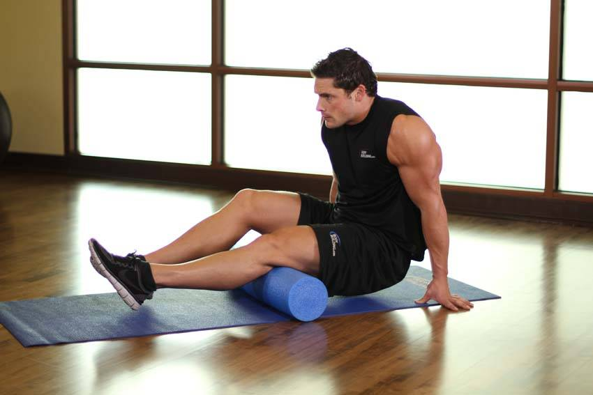

- In a seated position, extend your legs over a foam roll so that it is position on the back of the upper legs. Place your hands to the side or behind you to help support your weight. This will be your starting position.
- Using your hands, lift your hips off of the floor and shift your weight on the foam roll to one leg. Relax the hamstrings of the leg you are stretching.
- Roll over the foam from below the hip to above the back of the knee, pausing at points of tension for 10-30 seconds. Repeat for the other leg.